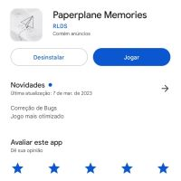

Início
Paperplane Memories é um infinity runner inspirado no clássico Flappy Bird, com uma identidade visual de papel e desenhos, onde controlamos um avião de papel que voa sobre um papel branco.
O Jogo é simples mas tem um visual único e muito elogiado, e tem diversos outros desenhos espalhados como forma de referências, desde nuvens rasuradas, gaivotas e folhas até desenhos de pessoas e outras criaturas. O Jogo tem 2 músicas originais, idioma Inglês e Português Brasileiro, e esta disponível para donwload na Play Store. Conheça mais sobre o jogo a seguir.
Lançamento
O jogo foi lançado dia 11 de Janeiro de 2023 na Play Store, conta atualmente com pouco mais de 80 donwloads e uma avaliação média de 5 estrelas com 28 avaliações. O jogo foi lançado inicialmente com anúncios, mas que foram retirados na única atualização do jogo, lançada dia 7 de Março, por motivos de otimização.
Desenvolvimento
O jogo foi desenvolvido na engine Unity. Foi desenvolvido em um período de 2 meses, no fim do ano de 2022. O jogo nasceu como uma idéia pequena de ser um simples clone do Flappy Bird, mas que acabou crescendo e virando um projeto maior e com potencial para ser publicado.
Criador
O jogo foi criado por Rodrigo Lins, na época com 16 anos, e foi sua primeira experiência publicando um jogo na Play Store, mesmo já criando jogos desde 2020. Ele também possui pequenos jogos publicados na plataforma Itch.io, disponíveis exclusivamente para PC.